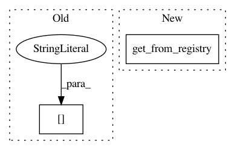

fcb01e3b18c0b3304c4ff0b1f0b8b4ede518f762,ludwig/features/numerical_feature.py,NumericalFeatureMixin,add_feature_data,#Any#Any#Any#Any#Any#Any#,82
Before Change
proc_df[feature[PROC_COLUMN]] = input_df[feature[COLUMN]].values
if preprocessing_parameters["normalization"] is not None:
if preprocessing_parameters["normalization"] == "zscore":
mean = metadata[feature[NAME]]["mean"]
std = metadata[feature[NAME]]["std"]
proc_df[feature[PROC_COLUMN]] = \
(proc_df[feature[PROC_COLUMN]] - mean) / std
elif preprocessing_parameters["normalization"] == "minmax":
After Change
np.float32).values
// normalize data as required
numeric_transformer = get_from_registry(
preprocessing_parameters.get("normalization", None),
numeric_transformation_registry
)(**metadata[feature[NAME]])
proc_df[feature[PROC_COLUMN]] = \
numeric_transformer.transform(proc_df[feature[PROC_COLUMN]])
In pattern: SUPERPATTERN
Frequency: 3
Non-data size: 2
Instances
Project Name: uber/ludwig
Commit Name: fcb01e3b18c0b3304c4ff0b1f0b8b4ede518f762
Time: 2020-12-03
Author: jimthompson5802@gmail.com
File Name: ludwig/features/numerical_feature.py
Class Name: NumericalFeatureMixin
Method Name: add_feature_data
Project Name: uber/ludwig
Commit Name: 9be4432a7b5e340ce050bb92ab7b41fafb31eb16
Time: 2019-06-17
Author: 33033675+ydudin3@users.noreply.github.com
File Name: ludwig/features/timeseries_feature.py
Class Name: TimeseriesBaseFeature
Method Name: get_feature_meta
Project Name: uber/ludwig
Commit Name: fcb01e3b18c0b3304c4ff0b1f0b8b4ede518f762
Time: 2020-12-03
Author: jimthompson5802@gmail.com
File Name: ludwig/features/numerical_feature.py
Class Name: NumericalFeatureMixin
Method Name: get_feature_meta